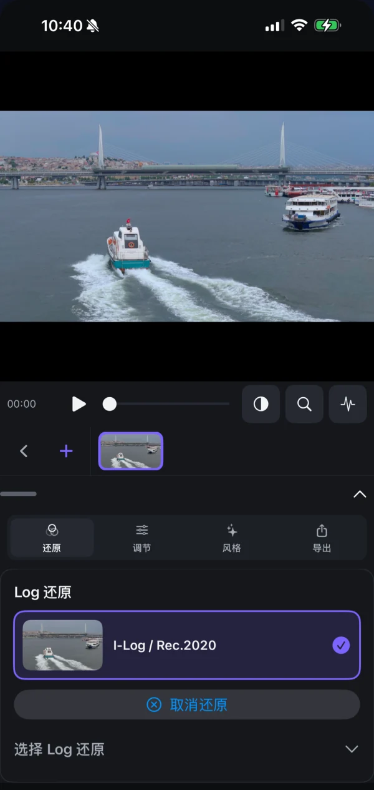
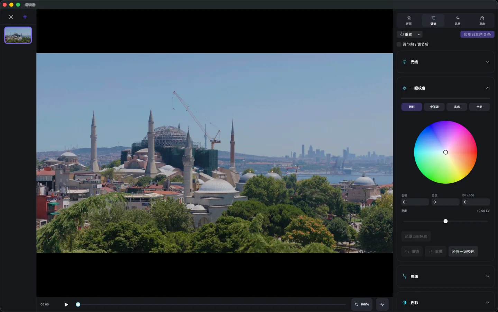

在 iPhone 上
还原 Log 灰片。
把一批外拍素材还原成自然色，导回相册时保留原片中已有的拍摄日期。
适用于 iPhone、iPad 和 Mac

从存储卡到相册
导入这一批
从「照片」或「文件」选择视频。先核对相机和 Log 方案，再预览还原效果。
把调色用到整批素材
在一条视频上调整曝光、白平衡或曲线，再把可共享的调整应用到其余素材。
按拍摄日期找回作品
将选中的视频导出到「照片」。源片带有拍摄日期且导出设置允许时，作品会保留这个日期。

用 20 秒查看 HUEO 的操作界面
阅读 Luna Ultra I-Log 上手指南无声演示，画面来自已上架的 App Store 截图。
阅读演示文字
先查看 iPad 还原页与导出页的同一帧画面，再看 iPhone 上的 I-Log 输入方案、Mac 上的色轮，以及 iPad 导出页中保留已有拍摄信息的选项。
按相机选择输入
查看素材使用的录制模式。具体支持取决于机型、编码与色彩标签，导入后可以核对并手动选择还原方案。
- Apple
- Apple Log / Apple Log 2
- Insta360
- I-Log
- Nikon
- N-Log
- Sony
- S-Log3
- DJI
- D-Log / D-Log2
- Canon
- Canon Log 2 / 3
- Fujifilm
- F-Log / F-Log2
在大屏上精调色彩
用色轮平衡暗部、中间调与高光，检查视频示波器，再决定输出格式。媒体处理在设备上完成。


按成功导出的文件数选择
免费
30 个文件
终身累计 30 个成功导出的文件，可实际体验还原和批量处理。预览、取消和失败的任务不占额度。
HUEO Pro
不限次导出
经常处理整批素材时，可选择月订阅、年订阅或永久买断。当地价格在 App 内的购买页面显示。